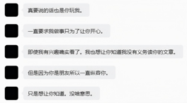
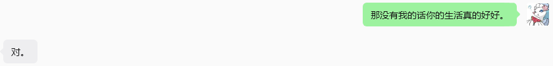

← 返回首页
04丙烯碎笔之如果我把坏的说成好的
8/8
今天是八月八日，能看到这里的都是我的父亲。可以凭此截图去做亲子鉴定。开个玩笑。
先随便提一嘴，昨天我的母亲背着我私聊她一个心理老师朋友（不早说），晚上强迫我听她的道歉，虽然我很不情愿。我觉得跟父母没有什么好讲的了，就算父母在对他们对我经历的臆断表现出后悔，我也不认为是真心的道歉。我无从怪起，因为我注定不能把文章里的一切跟爸妈说理清楚，还保证可以达到通透的效果，因为我自己传达和表达本身就是混沌的。如果父母反思，一是不能过多干涉早恋，二是不能对我管理严格，三是要给我机会，妄想我能活到独立自主起来的气候，那也是让我感觉可悲的。也许我应该铭记，而他们应该忘记。
得以证实的是这种不能理解还强塞道歉的事情，让同学感到无名火。上火就吃冰激凌。
我又忍不住聊天。我问她如果有清除整个人生记忆的药物，愿不愿意我服用。无应答。我能想到这一点已经足够可笑，这种药物自然是没有的，有了也不可能轻易用的上，有这机会当初我可以托人购买保证自杀的药物，就算我没有钱买不到。实际上清除记忆没有用，它不会改变我这个人的本质，这就是我坚持自杀的一大原因。恶心的我，记忆苏醒依然恶心。
无非又后悔自伤于命中注定的相识，当时控制不住冲动，和现在久久难以戒断的依赖。
我想巩固我的“玩具”定位，尽管我认识到对别人这是负担。更可以说，是在道德绑架。

我刻意经过删减把这句话做成中指的形状。
其中后四句我早已意识到，尽管藏在心里。
可是偏偏是这第一句，令人毛骨悚然不已。
一些同学通过沟通知晓我摆脱依赖的困难。
我明明已经看清家庭，看清了异性的关系。
我却没有完全看清怎么做最简单的，朋友。
我暂不怀疑我们是朋友的关系。应该是吧。
我根据我问她问题得到的答复推测出她大体是幸福的，甚至我感觉她在被我“拷问”的时候有吹毛求疵的感觉。一个烦恼是“打音游的时候会被打断”。而我通过各方面主观客观的测试我方他方的调查证实我对生活的幸福感、善待自己的能力都是最低分。我无疑经历不幸。但这不是我病态索取关注的理由。确实我实在没有办法，如果我需要暂时活下来的话。如果不活肯定没有什么问题，别人能够话一些时间适应。可是我必须自我批评。我必须忍受戒断的痛苦，从这一秒开始对自己进行切割。我无意利用他人的心善和朋友关系维持我的生命。
我能够意识到却没有办法，因为我没有做好斩断一切的准备，我自杀准备了几天甚至很久了，却极不情愿解除对他人任性的攀附。攀附恰有一个谐音，叫作“盼复”。我就是别人一分钟不回我，我就难过，并且对着聊天框很无聊内耗，再不厌其烦地加长我的文字的那种人。这导致别人很难合理回复我，“接住”我的冲动。回复自己不想回复的消息，接触不想接触的人，真的会很累。我并不适宜跟人把羁绊加深，这不但解决不了我的问题，而且会犯劳好心人。

这句话无疑是不必遮掩的大实话。对方实实在在是一个大好人。真要算起来的话，当初和现在一个半月以来，她都无理由接住我的任性冲动，不接受我的悔过。这很像我和父母。她对我的感觉，就是很难说服成朋友，真是朋友会有些许愉快，而大多数时候是维持表面治愈的劳累。既然对方承认相识是命中注定的，这点我有被说服，那么我应该是上天赐予幸运的她的一大不幸。我的出现并不像她对我的长期影响一样是有很大启示意义的，虽然我已经习惯吵架，习惯不合，习惯认为心烦也算生活的乐趣，讨厌也算复杂的情感，但对方并非。
在我看来我起起伏伏，最终可以自杀了结，但是我活到了她忍不住向我说出大实话的那天。
不过从自私的角度讲，我的生活在变得越来越真实，真真实实的低迷，无趣，却也是真实。
我不是没有站在对方的视角看问题，相反，死前的走马灯我都是在考虑别人会怎么样。我自觉我狭隘的点是，我只考虑过“别人看我死会怎么样”，却没有考虑过，“别人看我活会怎么样”。别人看我死的时候，一定是包容、安抚的，百般劝说我不要死；而我活着，那真正的朋友就会选择重塑我，改变我，直指任何我需要改进的地方，无论有没有实际方法。相信我的朋友，亦会将我随时可能会死的这种隐患抛开，相信他们真诚言语能够让我实现重生。
这样一来，我不能够犹豫或自我拖延。必须立即采取实际行动，呼应这位好友的批评。
首先我先承诺在接下来一周内不去想生死的任何事情。因为我的意志只能坚持这么久。
我无法保证我仍然能拥有像样的寿命，因为我的“病情”（生理+心理）比绝症好多，但比正常人难耐多得多。有一两个病症甚至让我感觉类似残疾。我还需要坚强地完成学业，甚至要发展事业，这本来就不容易，然而我并不占据任何看得见的有利条件，这已令我绝望多年。另外我不能接受我有心理疾病或我没有心理疾病，亦不能接受的是，我需要或不需要去看心理医生。每天都有人问我，我心理医生还去看吗，去看总好过没有。我一直不愿提起此事。
其次伙伴们肯定对我有不好的看法，除了已经打消我死亡疑虑的那个，至于为什么，可以去看上一篇或更前一篇，而且已经承诺不言死亡。并且因为我的一个梦，让我意识到，我是万万不可死的。别人都认为我不该死，反而不能直说我活得太憋屈，堵塞，懦弱，犹豫。
其实那些该说的早就可以说，你们千万不要觉得时间久了有些道理我自会明白，真的，有什么事情直接骂我，不要担心一骂我就容易去死，容易发疯。你们愿意帮我，我真的很感激。可惜我没有任何东西可以报答。没人拯救生命是渴望报答。不过没人委屈自己拯救别人吧。
并非啊，其实你们都委屈很久了。甚至有每天很晚很晚下课，还愿意跟我打电话到第二天的，每天几个小时。不委屈至少也是很麻烦的。多少次打你们电话，语音，你们说在忙，没空，然后自己事情一结束就招呼我继续，无论多晚。你们中大多数都比我忙得多，基本应付我是很极限的，而且我又话很多。这一连几天我都请假不出门上课，是因为我太累，然后吃不进去饭又虚弱，睡不着熬夜又精神恍惚，反而加重我的病情，导致我现在焦虑感陡增。
更感觉自己闲得耐不住，又没有太多事情可以干，只能不断地骚扰你们，以后绝对不会了。
其次针对那个人。你不用干什么，因为你很少主动发消息。只要我安静下来，你肯定不会在聊天里发什么东西。我觉得事情还没有严重到只有删掉你的联系人才能解决的地步，我还想保持沉默静静看你朋友圈发的东西，还想看你直播打歌写作业什么的，只要我不出声，仿佛情况就能好起来。我没有任何侵入他人生活的权力，不过我一直在问，今天有没有什么好事跟我分享，你总是多多少少说一些，也算是给我得逞了。现在求求你，说什么也不要拉黑我之类的，因为那样我很难沿用之前的自我欺骗活下去，这是我仅有的希望，实在拜托。
我说什么都是求助别人，别的同龄人，也许我可以寻求别的大人的帮助，那样包容度会高一点？比如之前电话无意泄露，对方父母就耐心开导我，虽然可能一句话都听不进去，我也没脸让大人知道我的故事，可是就是被关心的话，会感觉变好。或许可以找找网友，什么陌生人，也是有可能的啊。不能把压力全部堆给认识的那三四个人身上，还天天骚扰很久。尤其是当事人，抛开初中的破事不谈，她已经忍受一个半月，我还觉得一开始还行，就后面开始变烦，实际上可能加上微信的当天对方就处于难以直言的厌烦之中，我陷的越来越深，丝毫没有察觉到！很难有人有这么长久的耐心，不过既然冲突总会爆发，不如来得早些，激烈些，彻底些，那么我就无需一边计划怎么重生，一边质疑重生的价值和正确性，很彷徨。
他人即地狱。之前她祝我早日脱离苦海，我说你就是苦海。没意识到，双方皆是苦海。
同样的，她调动我的情感是无意识的，问题是我不停把她作为单向的依赖是下意识的。
在这个世界上少不了猜忌，猜忌是用来提供安全感的。我不跟别的同学说是怕被笑话，实际上他们仅仅想着帮我而毫无怨言。可惜我在产生的猜忌只是破坏安全感，回归陌生性。
我常常想跟人做陌生人，或者希望有清除记忆的药物，如果能实现，我可能不再考虑自杀。
人类的眼睛发育得太早，在洞见世事与人心的幽微之前，我们的视力，只服务动物性。
现在的问题全部聚集到自己身上，甚至和黑头像对面的她都没了关系。只是那里直接批评了我的问题。我先前虽有意识却不够果决，以为可以像潮水一样，自然地、慢慢地消退；如今醒悟，不自我裁决，不足以产生改变，也就无法“回归”正常化的人际关系。这方面我从小没有任何意识，因为我习惯被宠溺对待，习惯很多朋友，习惯无话不谈，却不习惯被推开。
也许有人质疑我先前说的从小缺爱，解释是，我缺少正确的与同龄人、与异性的情感经验。
尽管我早就觉得是不是同龄人、是不是异性不重要。毕竟我都没办法和亲生父母正常相处。
我面临的压力是什么呢？顶多就是这个人如我当年一样，以另一个更复杂的原因，断然跟我绝交了。做这件事最适宜的时间是刚开始厌烦的时候，其次是现在。可是，我打心底抗拒这个有利双方的动作。这是顶天的大事，虽然我承认我们彼此作为玩具，不和气不公平地“刚认识”那么久，其中我不后悔被当成玩具甚至被玩得忘乎所以，对方实际上一直忍受压抑，但是如果要删除微信的话，对对方是解开一个心结，甚至有种轻松感，可我的天会塌落的。怎么说都像是另一次胁迫，可是我真的想弥补内心的缺失，改正我的错误，平淡做个朋友。
就如你一直想的那样。只是朋友，不是一个精神病患者需要向人借钱打药，维持生命。
那个之前冲动找我的陌生人上来就跟我说：“你的那个她还在吗？多去陪陪她，讲讲话。”
我很难过。她的内心比我强大百倍。而我甚至需要冒险才能维持我们“老朋友”的关系。
之前是冒父母的险，现在是冒自己的险。我很有可能会经他人之手，亲手杀死自己。我期望把眼睛闭上，静静地听听心跳的声音，忘记病痛和内心的挣扎，去感知自己的身体真的在为自己输血。既然比自杀日凭空多活出来几天，真的要好好听自己和别人的声音。我不能骗自己不需要强烈情感联系，不需要偶尔的别人围着我转，但我更需要强大的精神独立，破除对他人的依赖，不让别人烦劳。我虽已纵身迈入他人的地狱，钥匙却仍然攥在自己手中。
如再无可挽救，作者绝笔。哦不，封笔。